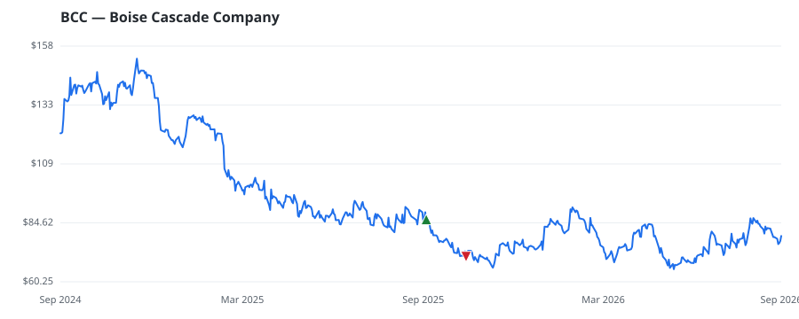

bullish · bearish · n/a — dots: price>SMA10 · SMA10>SMA50 · SMA50>SMA200 · up>down volume (20d)
Capital Goods · mid cap
Members who bought BCC earned a dollar-weighted -17.2% from their disclosure dates, versus +1.6% for the S&P 500 over the same holding windows (-18.8% alpha).

▲ green = a disclosed purchase · ▼ red = a disclosed sale (plotted on disclosure date)
Boise Cascade Co is a producer of engineered wood products (EWP) and plywood. The firm operates in two reportable segments, namely Wood Products and Building Materials Distribution. The Wood Products segment manufactures laminated veneer lumber (LVL), I-joists, and laminated beams. In addition, it manufactures structural, appearance, and industrial-grade plywood panels, and ponderosa pine lumber. The Building Materials Distribution segment is engaged in the distribution of various building materials, including oriented strand board (OSB), plywood, and lumber; general line items such as siding, WHOLESALE-LUMBER & OTHER CONSTRUCTION MATERIALS · website
| Revenue | $6.7B | Net income | $376.4M |
|---|---|---|---|
| Operating income | $490.0M | Diluted EPS | $9.57 |
| Assets | $3.4B | Equity | $2.2B |
| Member | Chamber | Out-performer | Disclosed buys $ | Return on buys |
|---|---|---|---|---|
| Lisa McClain | house | — | $8K | -17.2% |
Disclosed $ figures are bracket midpoints — filings report ranges (e.g. $1,001–$15,000), not exact amounts.